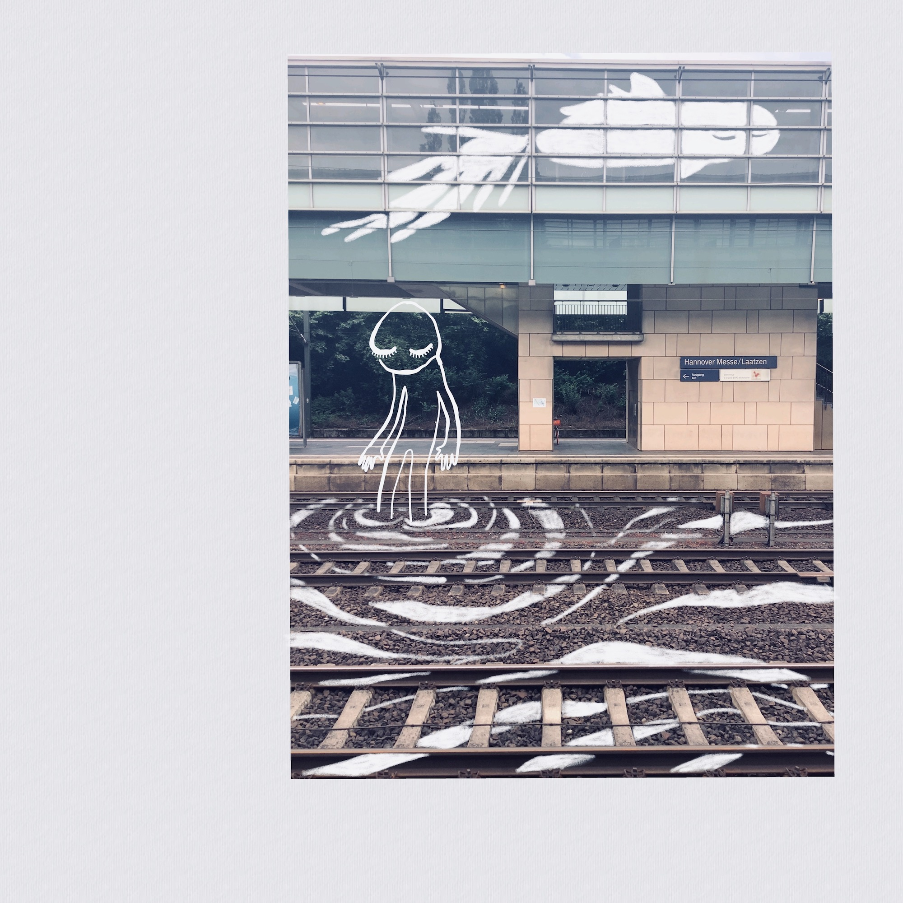
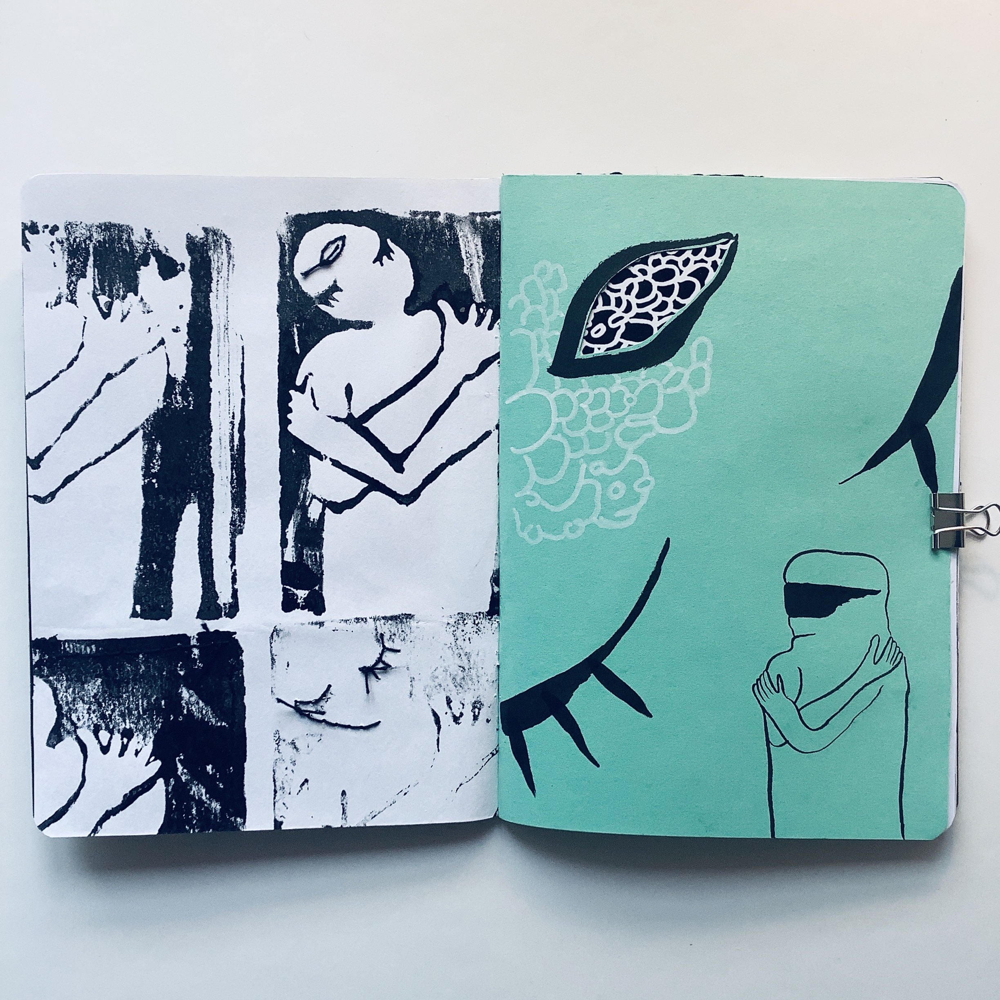

Journal
- 2022-03 Irreducibly A Body
- 2022-01 Inclusive Automatic Gender Recognition Is A Contradiction In Terms
- 2021-12 body-in-time
- 2021-10 ripple
- [archive]
See also: instagram @xn_ze_ro
Book-Objects & Illustrations
Illustrations for "our love without home we translate in cu-ir" in KUIR, an online magazine for anti-colonial queer poetry (published 2022)
Should I Do the Thing? (2016-2018)
"love-song to a future self" self-reflection zine (2019)
UNSAYABLE (2020) is a book about dreaming and softness
 
CORESIDENT (2020+)
In working on CORESIDENT, I draw on literature on body-mind centering; butoh; and contemporary research on human skin microbial communities and their function in immunity. Researching skin from each of these fields allows interrogating the conception of skin as an essential inside/outside boundary: and the ideas of inside and outside altogether. Anatomical elemtns informed by Human Anatomy Atlas 2021.

The book-object includes a set of transparency slides - the constellations at the different layers of skin.

The image of a disembodied / dislocated skin-object is a digitally-edited photograph of one of several dislocated objects made (as a meditation on the filth of skin-layers) our of rice paper, flour, and various seeds and grains.

A few sketches and exploration of the infested skin-object mythology.

The internal body is considered through the lens of demonic symmetry. One of the spreads of the book includes a mirror material, slicing the rendering in half. The rendering includes the spine, and the kidneys and liver, associated with the water element, and engaged in the flow of essential energy (kidneys) and filtration of toxins (bladder).
Fiction
The Molloscope - Ayin Tay Kon was a chemical anthropologist deeply fascinated by stress and trauma in humans**, which they saw as both impractically frail and remarkably robust. They invented the molloscope as a post-hoc psychological intervention to help relieve the stress of massive-distance travel. Most human beings had left Earth in a mostly-disorganized frenzy, following large-scale shifts in the planet’s capacity to sustain life, to planets that were barely-explored, often in experimental vessels. Trauma in this first migrant generation was unsurprising, given how stressful its circumstances. ...
The Long Kodo - One form of variation is the chorus of distinctness: descriptive words or phrases where typically between a quarter or half of the Udu participating replace with alternatives. The story of the first Kodo is one of the most common and short; characteristically both reflective of human custom but not featuring human characters. ...
Air Wells - Why don’t more settlements use air well architectures? Many settlements, particularly relatively young ones, live in danger of severe water shortages. A number of readers wrote in asking why they see more and more commonly large stone structures for collecting water on other worlds, but not theirs, where it would seem so needed. ...
lost mail: visual art and narrative serial (03.2018 - 02.2020)
Non-fiction, I guess..?
An academic book chapter I co-authored about sex robots (what makes it a robot rather than a doll is that is talks)
How to Observe the Inner Space of a Complex Biological System through Speculative Simulation
(And other works you can check on my research publications list)